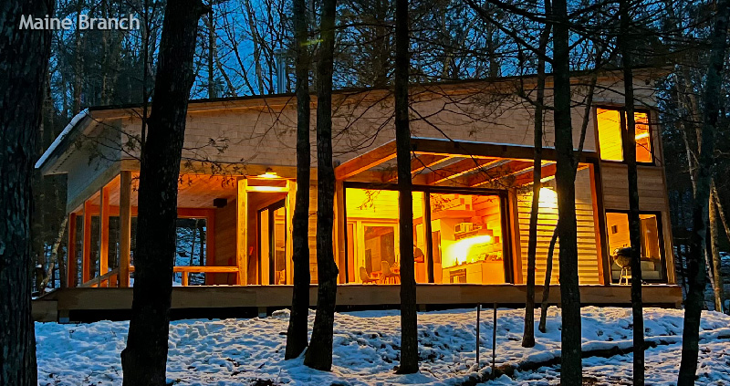
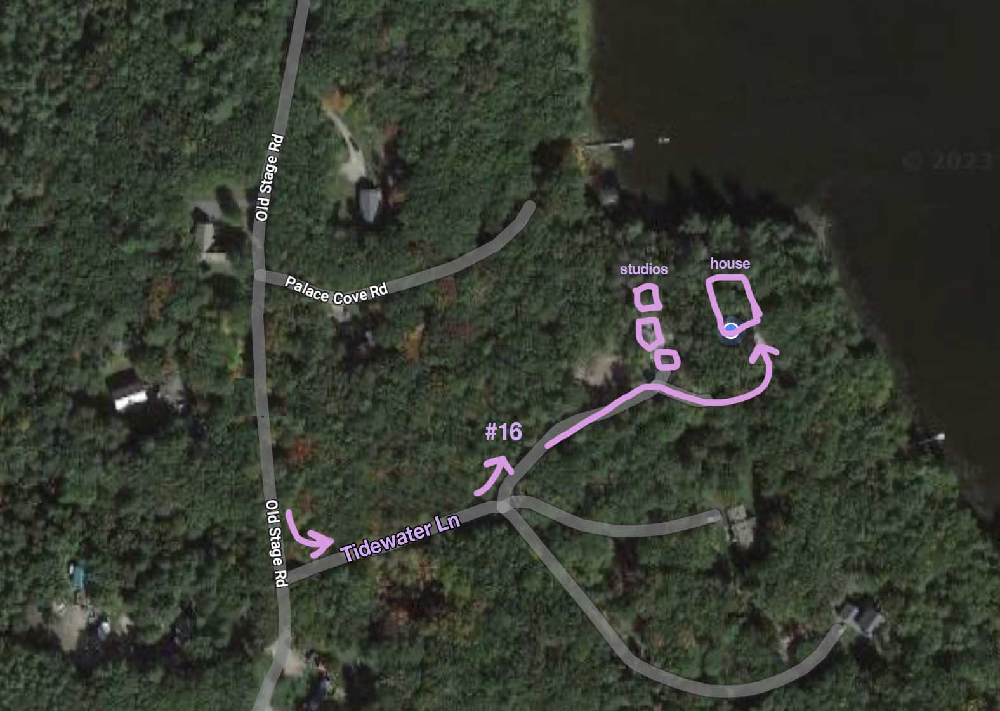

Maine Branch

Getting There
Address
Maine Branch is located at 16 Tidewater Ln, Arrowsic, Maine. Google Maps should be accurate but the road is fairly new so older GPS'es might have trouble identifying the address.
Directions
When you're heading south on Old Stage Road, you'll see Tidewater Lane on your left. Turn here and go ~500 ft and you'll see #16 on your left. Make the left and drive past the studio buildings all the way down to the house, at the end of the driveway. Here's a map:

House Manual
Entry
All doors will be unlocked and can remain unlocked during your stay.
Parking
The site includes 3 buildings at the top of the hill and 1 main house at the bottom of the hill. Park wherever you'd like but it's generally more convenient to drive all the way to the bottom of the hill and park at the
foot of the stairs or by the rocks / shed 📷
EV Charging
Charge a Tesla or other electric vehicle (need an adapter from Tesla to generic) up by the power pedistal at the top of the hill. You'll see the charger attached to a tree.
Heating and Cooling
The house and the studios are all heated and cooled via heat pumps. The thermostat in the main house is found next to the washer/drier. The temperature for the 3 outbuildings are controlled by remote control located in each building.
Kayaks
There are two kayaks located by the waterfront that are free to use. Kayak paddles are located in the outdoor shower area, which is at the back side of the house.
WIFI
Wifi connection instructions:
name: mainebranch
pass: househouse
Stovetop
The stovetop is a touch-screen interface. Push your finger on the Power icon in the bottom right to enable the induction stovetop. Once its powered on, each burner can be powered on individually and dialed up or down in intensity using the touch-screen slider. There's also a stove hood that rises up from the stove itself, operated by pressing the little button in the back right of the stovetop. Once you're done cooking, the down button is located on the hood unit itself.
Washer/Drier
The washer and drier are a single ventless unit. Pick "Wash and Dry" to do a single cycle that first washes then dries your clothes in one cycle. Laundry detergent is above the washer.
Dishwasher
The dishwasher tablets are stored under the sink. One tablet dropped into the silverware area will do the trick. Hit the power button and then the play/pause button to start a cycle.
BBQ
Feel free to use the Weber grill. It's propane so please shut the burners off after use and put the cover back on after the grill cools.
Light switches
The light switches in the house are operated by using the
top button to turn them on and the bottom button to turn them off. The middle up and down arrows are for dimming up and down. 📷
Fire extinguisher
Located under the sink!
Check-in and check-out
Please take trash bags to the trash bins and recycling to the blue recycling bin (bins are located on the back side of the house). Please remove pillowcases and sheets from the beds and leave them on the floor for the cleaners on your way out.
Rules / Off Limits
Smoking
No smoking indoors please!
Scooters
Please do not use the electric scooters during your stay! Thank you.
Wood Stoves
Please do not use the wood stoves without owner approval.
Wood fired hot tub
Please do not use the wood-fired hot tub as it is drained for the summer. It should only be used if you've received explicit instructions and setup from Alex.
Espresso Machine
Please do not use the espresso machine as it is a manual machine and is very finnicky and easy to damage.
Local sights
Swimming
Check out sewall pond!
Food and Drink
Buranos Pizza in Bath is a lovely place for dinner.
Solo Pane is a fantastic italian bakery in Bath with great espresso and pastries.
More recommendations to come!!
Contact
Issues?
Feel free to text Alex at 203-560-8034 with any concerns.
{kind=link}
{kind=link}